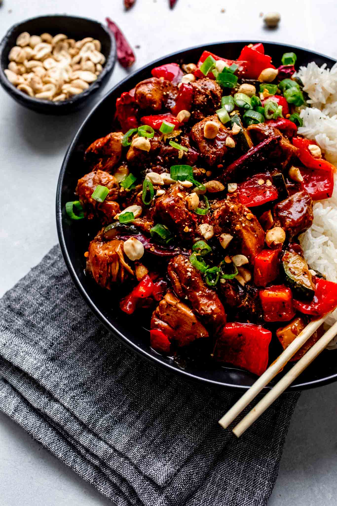

KongPao-Chicken

Description
Kung pao chicken is Chinese-style stir-fried chicken cubes with dried chili peppers. It's a Sichuanese staple
that was brought over to America and reinvented for local flavors and tastes. The Sichuanese version is a tad
more complex, seasoned with Chinese peppercorns and a large heap of dried chili peppers. The American rendition
stays true to most of the original ingredients, but the flavor profile is significantly sweeter and will
sometimes include bell peppers.
Ingredients
- Boneless skinless chicken breast
- Soy sauce (or tamari)
- Vinegar (rice vinegar or sherry vinegar)
- Cornstarch
- Granulated sugar
- Toasted sesame oil
- Red & green bell peppers
- Green onions
- Cashews
- Dried red chili peppers
- Fresh garlic & ginger
Steps
- Make the Kung Pao sauce: mix the soy sauce, vinegar and sugar in a bowl. (yeah, it's that simple.)
- Prep the chicken! Cut the boneless, skinless chicken breast into uniform strips. This is a little easier to
do if your chicken is slightly frozen. Then, toss it in a little soy sauce and cornstarch to coat.
- Cook the chicken until crispy! Working in batches so as not to overcrowd the pan, stir-fry the chicken
pieces in sesame oil until they're cooked through and gorgeously crispy.
- Stir-fry! Stir-fry the bell peppers until they're a little soft. Then add the scallions, cashews, ginger,
garlic, and dried chili peppers. Stir fry all of that for a minute or two, and then stir in the Kung Pao
sauce and cooked chicken.
- Simmer. Let all of the flavors meld over the heat for a few more minutes. The Kung Pao sauce will thicken
slightly and really coat the veggies and chicken, which is what you want.
- Serve! We love to serve this over steaming bowls of white or brown rice.